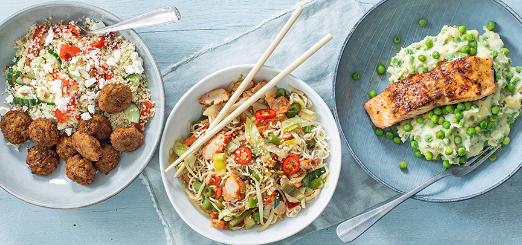
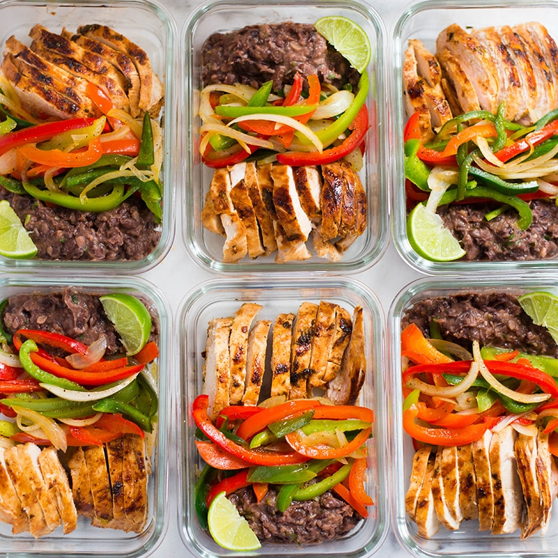
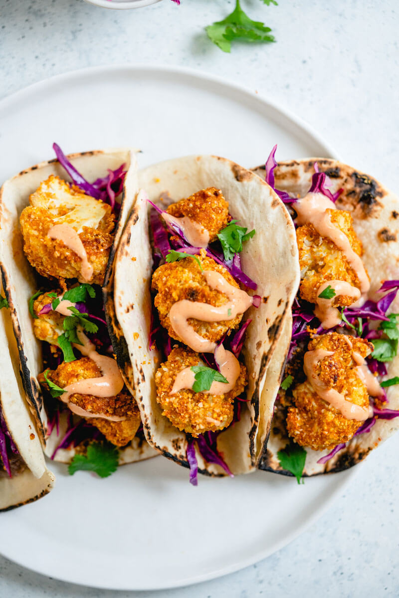
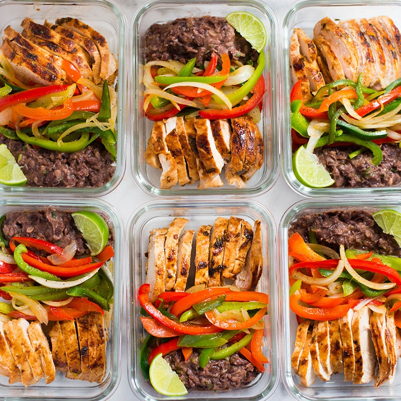
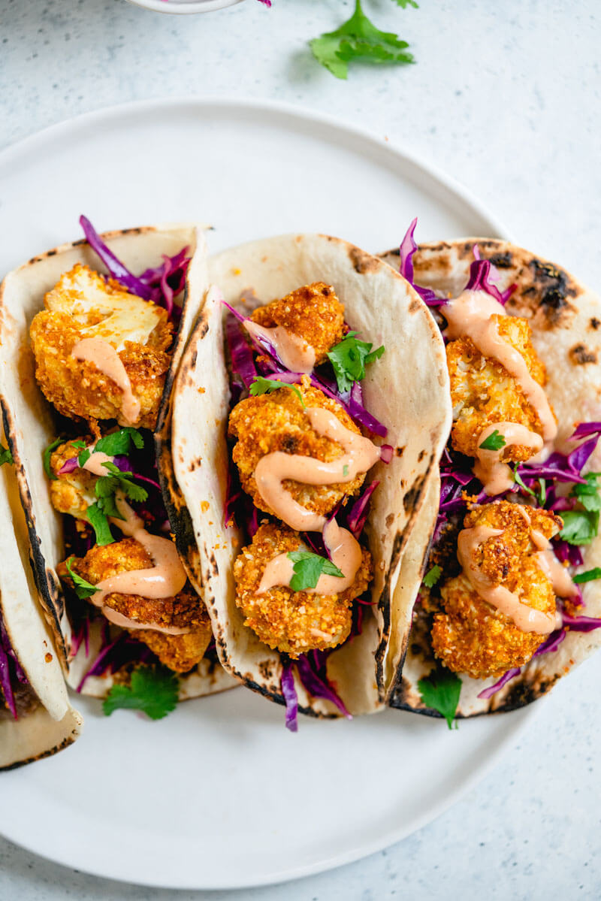

Biryani (ook wel als biriyani or biriani geschreven) is een echte familiemaaltijd.
Chocolate chip cookie
Chocolate chip cookies eten we in onze dromen de hele dag door,
en dan het liefst als ze perfect gebakken zijn.
Dan hebben ze een subtiel knapperig randje,
een zachte, chewy binnenkant en
zit er lekker veel goed gesmolten chocola in
Gegrilde kebab
Kebab kennen de meesten als een groot stuk vlees dat
rond draait in een shoarmazaak.
Dit is Döner kebab, maar de Turkse
kebab is iets anders. Dit is gekruid gehakt, meestal
geserveerd
op een stokje, als worst of plat gedrukt als dunne lap vlees.
Erg lekker d
oor de verschillende kruiden en smaken. Zeker en vast het
proberen waard en een echte barbecue of gourmet topper!

 


